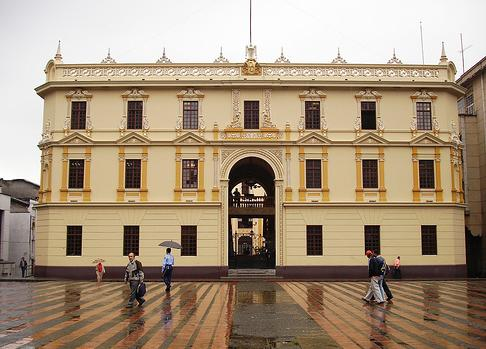

Colombia es un país multicultural y plurilingüe, donde el uso del
español varía según las regiones geográficas. Se pueden identificar
varios dialectos principales, clasificados en dos grandes grupos:
Dialectos de tierras bajas:
Español costeño
Español chocoano (ecuatorial)
Español llanero
Dialectos de tierras altas:
Español bogotano (rolo)
Español paisa
Español vallecaucano
Español cundiboyacense
Español santandereano
Español andino (o pastuso)
Español tolimense-huilense (opita)
Español amazónico
Además del español, en Colombia se hablan más de 60 lenguas
indígenas, distribuidas en distintas regiones del país, desde las
lenguas amazónicas en el sur hasta las lenguas arawak en el norte.
En el archipiélago de San Andrés y Providencia, el inglés también es
lengua oficial. El árabe tiene reconocimiento oficial en el
municipio de Maicao y es hablado ampliamente en ciudades como
Barranquilla, Cartagena y San Andrés. Su uso también se extiende, en
menor medida, a otras ciudades del Caribe colombiano, especialmente
en las riberas de los ríos Magdalena, Sinú, San Jorge y Cauca. La
diversidad lingüística de Colombia es una muestra de su riqueza
cultural y de la influencia de diferentes tradiciones a lo largo de
su historia.
Artesania
Las artesanías colombianas reflejan la riqueza cultural y la
tradición de los distintos grupos étnicos del país. Son valoradas
tanto por locales como por turistas, destacándose por sus técnicas
ancestrales y materiales naturales. Entre las más representativas,
encontramos:
Sombrero Vueltiao (Córdoba)
Galapa (Atlántico): máscaras y figuras de carnaval.
Ráquira (Boyacá): cerámica (caballitos de Ráquira, materas,
jarras, alcancías, entre otros)
Mompós (Bolívar): filigrana en oro y plata.
San Jacinto (Bolívar): hamacas, textiles y cestería.
Carmen de Viboral (Antioquia): loza fina elaborada con barro
gris, cuarzo, feldespato y caolí
Pitalito (Huila), San Sebastián de Urabá (Córdoba), Momil
(Córdoba) y La Chamba (Tolima): utensilios de barro.
Guacamayas (Boyacá): cestería en fique y paja de monte.
Tenza (Boyacá): canastos elaborados con chin o caña de
Castilla.
Iza y Nobsa (Boyacá): textiles en lana de oveja (ruanas,
cobijas).
Sandoná (Nariño): sombreros tejidos en paja toquilla
Las artesanías colombianas no solo son piezas de gran belleza y
utilidad, sino que también representan el legado cultural de
comunidades que han preservado sus tradiciones a lo largo del
tiempo.
Arquitectura
La arquitectura colombiana es el resultado de una fusión entre las
influencias indígenas, coloniales y modernas. Su evolución ha estado
marcada por distintos períodos históricos, reflejando los cambios
culturales, tecnológicos y estilísticos del país.
Los principales períodos de la arquitectura en Colombia son:
Arquitectura indígena:
Construcciones en materiales naturales como piedra, madera y
palma, adaptadas a los distintos ecosistemas del país
Arquitectura colonial (siglos XVI-XVII):
De fuerte influencia española, con edificaciones religiosas
y militares, caracterizadas por el uso de adobe, cal y
piedra.
Arquitectura del siglo XIX:
Incorpora elementos del neoclasicismo y el eclecticismo
europeo.

Arquitectura republicana (1880-1930):
Marcada por la monumentalidad, fachadas ornamentadas y el
uso de hierro forjado.
Arquitectura de transición (1930-1960):
Mezcla de estilos tradicionales con influencias del art déco
y racionalismo.
Arquitectura modernista (1970-2015):
Predominio del concreto, vidrio y acero, con un enfoque en
funcionalidad y minimalismo.
Arquitectura actual (2015-2020):
Apuesta por la sostenibilidad, el uso de materiales
ecológicos y el diseño inteligente.
Cada etapa de la arquitectura colombiana refleja la identidad y
evolución de su sociedad, dejando un legado invaluable en las
ciudades y pueblos del país.
Arte Plasticas
El arte colombiano ha evolucionado a lo largo de los siglos,
influenciado por corrientes europeas y adaptado a la identidad
cultural del país. Durante la época colonial, la pintura estuvo
marcada por el taller de los Figueroa y la obra de Gregorio Vásquez
de Arce y Ceballos. En escultura, destacaron Pedro de Lugo
Albarracín y Pedro Laboria con obras de gran expresividad. Tras la
independencia en 1819, el arte colombiano siguió siendo figurativo y
con escasa proyección internacional.
Escultura de Pedro Laboria
En las décadas de 1920 a 1940, artistas como Marco Tobón Mejía,
Pedro Nel Gómez e Ignacio Gómez Jaramillo introdujeron el muralismo
con influencias mexicanas y neoclásicas.
Pedro Nel Gómez
A partir de mediados del siglo XX, el arte colombiano adquirió
identidad propia con obras modernistas que integraban la cultura
nacional. Carlos Correa exploró la abstracción geométrica y el
cubismo, mientras que Pedro Nel Gómez combinó técnicas clásicas con
influencias de Van Gogh y Cézanne. Alejandro Obregón, con su estilo
expresionista y simbólico, es considerado el precursor del arte
moderno colombiano.
Carlos Correa - Abstracción geográficas
En la actualidad, artistas como Fernando Botero, David Manzur y Omar
Rayo han dado al arte colombiano un reconocimiento internacional,
consolidando su importancia en el panorama global.
Pintura de David Manzur
Literatura
La literatura colombiana ha pasado por diversas etapas, reflejando
la evolución cultural y social del país. Durante la época colonial,
destacaron el poeta Juan de Castellanos, la mística madre Inés del
Castillo y el narrador Juan Rodríguez Freyle. En el siglo XIX,
brillaron poetas como Gregorio Gutiérrez González, José Eusebio Caro
y Rafael Pombo, además de los modernistas José Asunción Silva,
Guillermo Valencia y Porfirio Barba Jacob. La prosa costumbrista
tuvo exponentes como Eugenio Díaz y José Manuel Marroquín. Las
primeras grandes novelas surgieron con Jorge Isaacs ("María") y
Tomás Carrasquilla. En el siglo XX, José Eustasio Rivera ("La
vorágine") inauguró la novela política y de denuncia social. Autores
como Eduardo Caballero Calderón, Manuel Mejía Vallejo, Álvaro Mutis
y Gustavo Álvarez Gardeazábal marcaron la narrativa contemporánea,
pero el mayor exponente fue Gabriel García Márquez, quien ganó el
Premio Nobel de Literatura en 1982 con obras como Cien años de
soledad. En poesía, sobresalieron Jorge Zalamea, León de Greiff,
Luis Carlos López y Luis Vidales. El grupo "Piedra y Cielo", con
Eduardo Carranza, impulsó la transición hacia la vanguardia,
mientras que el movimiento nadaísta, liderado por Gonzalo Arango,
rompió con la tradición. Actualmente, revistas como El Malpensante,
Arcadia y Número siguen promoviendo la literatura colombiana.
Deporte
El fútbol y el ciclismo son los deportes más populares en Colombia,
al igual que en muchos países de América Latina. Los partidos de la
selección nacional son eventos de gran celebración y verlos en
televisión es un pasatiempo común. Aunque el fútbol ha sido
tradicionalmente una actividad masculina, cada vez más mujeres
participan en el deporte. El tejo, considerado el deporte nacional,
es un juego tradicional en el que los participantes lanzan discos de
metal hacia un detonador de pólvora. El objetivo es lograr la mayor
cantidad de explosiones con los lanzamientos.
Seleccion Colombiana 2025
Gastronomia
El almuerzo es la comida principal en Colombia, normalmente servido
entre las 12:00 y 1:00 p. m. Consiste en una sopa, un plato fuerte
conocido como "seco" o "bandeja", y una bebida. Entre las bebidas
más populares están el café, considerado la bebida nacional,
especialmente en su versión "tinto" (café negro cargado). También
destacan el chocolate santafereño, las gaseosas nacionales y las
bebidas alcohólicas como el aguardiente, la cerveza y el ron.
Colombia cuenta con una gran variedad de frutas exóticas como la
guanábana, el lulo, la granadilla y el borojó. En la gastronomía
regional se destacan platos como:
Bandeja paisa (Antioquia)
Ajiaco y tamales santafereños (Cundinamarca y Boyacá)
Viudo de pescado
Sancocho trifásico y arepa de huevo (Caribe)
Carne a la llanera (Llanos Orientales)
Cuy asado (Nariño)
Religion
Colombia fue históricamente un país católico, con el catolicismo
como religión oficial hasta 1991, cuando la Constitución
estableció la libertad de culto y el Estado aconfesional. Sin
embargo, la Iglesia católica mantiene cierta influencia. En 2016
se decretó el 4 de julio como Día Nacional de la Libertad
Religiosa y de Cultos. Además del catolicismo, en Colombia hay
comunidades evangélicas, testigos de Jehová, mormones, budistas,
musulmanes y judíos, entre otras.


.jpg)
.jpg)


.jpg)